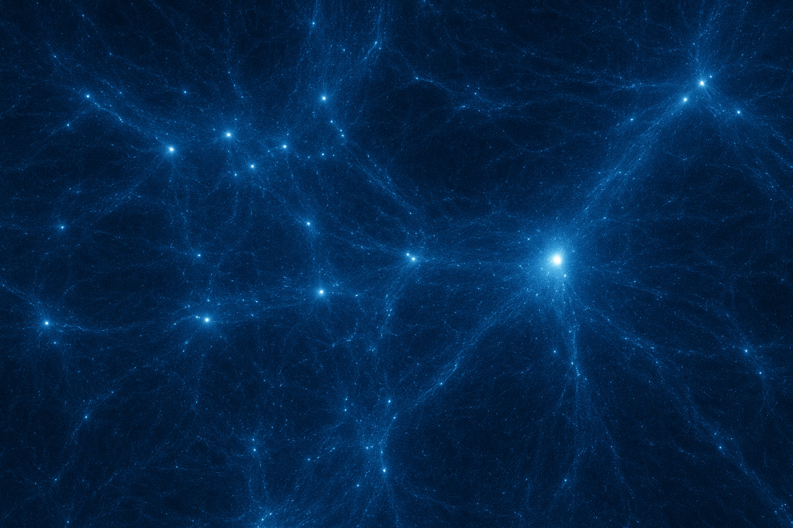

Galaxy Clusters
Galaxy clusters are the most massive gravitationally bound and virialized systems in the Universe. In X-rays, clusters glow through the hot intracluster medium (ICM), which is a diffuse, optically thin plasma heated to tens of millions of degrees that traces the depth of the cluster’s gravitational potential. Embedded within this medium are signatures of its dynamic past: shock fronts from mergers, sloshing cold fronts, and cavities carved out by AGN feedback, all revealing the ongoing interplay between gravity, gas dynamics, and energetic processes. At sub-mm wavelengths, the same ICM imprints deviations on the cosmic microwave background via the Sunyaev–Zel’dovich (SZ) effect. This provides a pressure-weighted view of the gas that complements the density-squared sensitivity of X-ray emission. While X-rays offer detailed insights into turbulence, metallicity, and thermodynamics on small spatial scales, SZ observations provide a redshift-independent mass proxy, enabling the study of cluster evolution deep into cosmic history. Together, these wavelengths show clusters not as static aggregations of galaxies but as dynamic laboratories for structure formation. By combining X-ray microphysics with SZ-measured pressure distributions, my work investigates how clusters assemble through mergers, regulate energy through AGN feedback, and serve as powerful cosmological probes, where every shock, cavity, and pressure ridge encodes the story of structure growth across cosmic time.
My First Lead-Author Paper: "The SRG/eROSITA All-Sky Survey: A comprehensive X-ray analysis of the Hydra I galaxy cluster"
In this work, we combined eROSITA and Chandra observations to map the intracluster medium (ICM) of Hydra I well beyond R500, providing the most detailed view of its structure to date. We find that the cluster core is relaxed and spherically symmetric, with weak shocks near NGC 3311 (M≈1.25−1.53) and multiple soft X-ray excesses in the outskirts (>3σ) that indicate active baryonic accretion. Surface brightness modeling using a modified β-model extends to 3R200, capturing the weak central cusp. Multiwavelength data from TGSS (radio), 2MASS (IR), and NED (optical) reveal correlations between X-ray features, non-thermal emission, and 2D galaxy distributions, highlighting a unique dynamical state and links to the surrounding large-scale structure. We also identify potential iron fronts at the edges of ram-pressure stripped halos and fossil radio emission, showing complex ICM interactions. The ICM average temperature (⟨T⟩ = 2.27 keV) and metallicity (⟨Z⟩=0.19 Z⊙) profiles match hydrodynamical simulations. Hydra I exhibits weak cool-core (WCC) properties, with a flat temperature plateau within R≈13.2′ and a central cooling time of ∼3.7−5.3 Gyr, suggesting the initiation of radiative cooling after its last major merger. Overall, this work significantly expands our understanding of low-temperature cluster thermodynamics, outskirts accretion, and the interplay of thermal and non-thermal components in galaxy clusters.
My First Paper: "The SRG/eROSITA all-sky survey: View of the Fornax galaxy cluster"
Using five SRG/eROSITA all-sky surveys, we mapped the intracluster medium (ICM) of the Fornax cluster out to well beyond R100, revealing unprecedented large-scale X-ray structures. Within R500, known features like the spiral-shaped edge are confirmed, but no bow shock is observed as predicted by simulations. Beyond R500, we detect X-ray “fingers” and excesses, likely caused by past mergers or warm-hot gas infall along filaments. These X-ray features correlate with member galaxies, globular clusters, and ultra-compact dwarfs, supporting the filamentary accretion scenario. Remarkably, we also discover a low-surface-brightness X-ray bridge connecting to the Fornax A group, highlighting ongoing cluster growth along large-scale cosmic filaments.